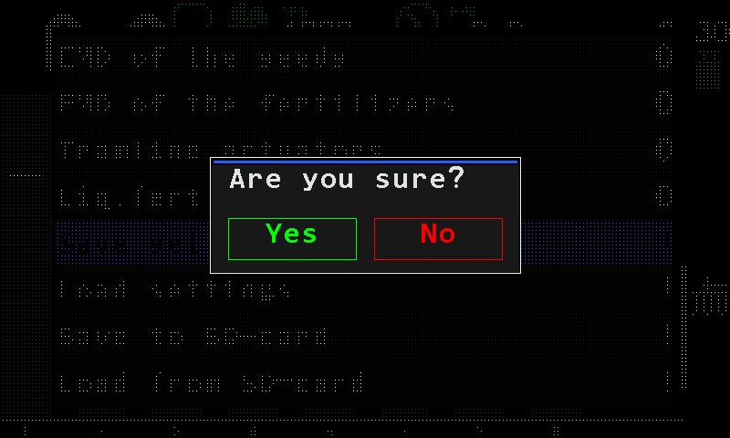

Enregistrer et charger les réglages
Garder une copie des réglages dans le panneau et la restaurer, et écrire le profil sur une carte mémoire.
Le panneau peut garder une copie de ses réglages et la restaurer plus tard — utile avant un essai. Avec une carte mémoire dans le logement, il peut aussi écrire le profil sur la carte. Tous ces éléments se trouvent à la fin du menu « Profile » (profil) (Le profil) et exigent le niveau « Agronomist ».
| Élément du menu « Profile » | Ce qu'il fait |
|---|---|
| « Save settings » | Garde une copie des réglages actuels dans le panneau (enregistrer les réglages). |
| « Load settings » | Restaure cette copie (charger les réglages). |
| « Save to SD-card » | Écrit le profil sur la carte mémoire. Affiché seulement quand une carte est dans le logement et prête. |
| « Load from SD-card » | Affiche la liste des profils présents sur la carte. Affiché seulement quand une carte est prête. |
| « Save factory defaults » | Enregistre les réglages actuels comme valeurs d'usine. Niveau « Service » uniquement. |
Garder et restaurer les réglages
Montez de niveau (Activer le niveau Agronomist), touchez l'écran d'accueil avec deux doigts et ouvrez « Service » → « Profile » — touchez chaque élément deux fois.
Glissez le doigt vers le haut jusqu'à la fin du menu. Touchez « Save settings » ou « Load settings », puis touchez-le de nouveau. Le panneau demande « Are you sure? » (êtes-vous sûr ?).

La question avant l'enregistrement des réglages. Touchez « Yes » (oui). Le panneau répond « Saved » (enregistré) ou « Loaded » (chargé).

Le panneau confirme par « Saved ».
S'il n'y a aucune copie à restaurer, « Load settings » se termine par « FAILURE » (défaillance) dans une fenêtre rouge.
Écrire le profil sur la carte mémoire
Touchez « Save to SD-card » deux fois. Il n'y a pas de question : le panneau écrit le profil et répond « Saved ». Si la carte n'est pas inscriptible, il répond « FAILURE » ; si la carte a disparu, « FAILURE » et « Insert SD-card » (insérez la carte SD).
- Les fichiers sont nommés automatiquement, P0001.pfl et suivants, dans le dossier PROFILES de la carte.
- Gardez la carte pour son propre panneau : un fichier de profil écrit par une version du micrologiciel n'est très probablement pas lisible par une autre.
La liste des profils de la carte
« Load from SD-card » ouvre une liste des fichiers de profil trouvés sur la carte. Un fichier que le panneau ne sait pas lire s'affiche en rouge. Un toucher à trois doigts ferme la liste. S'il n'y a aucun fichier de profil sur la carte, l'élément répond « FAILURE ».
Votre machine fait quelque chose que cette page n'explique pas ? Écrivez à support@agriwelt.com — un ingénieur vous répond.